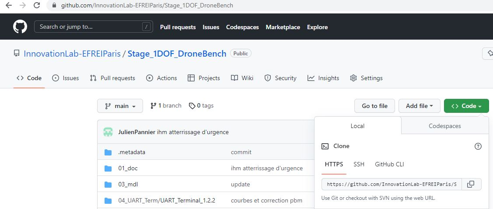

Gestion de version avec Git
Git est un outil de gestion version. Historiquement, ce type d'outil a été crée afin de suivre et de gérer l'évolution de codes sources (c'est à dire des fichiers en texte brut) au fil du temps. Il permet de garder l'historique de l'évolution des fichiers mais également de travailler à plusieurs sur le même fichier. Les opérations de fusion des modifications apportés par les différents développeurs étant faites quasi automatiquement (Merge). A noter que ce type d'outils peut egalement convenir pour une personne travaillant sur plusieurs machines. Aujourd'hui, l'arrivé d' offres d'hebergements en ligne comme GitHub se sont largement répandu et les services qu'elles proposent ne s'adressent plus uniquement aux développeurs. Pour l'anecdote, j'ai vu des personnes organiser leur mariage avec Git et GitHub… Pour résumer, la gestion de version est à priori un gros atout pour l'organisation et le partage de votre travail.
Prérequis
Avant de continuer:
- Installation de Git https://git-scm.com/downloads
- Création d'un compte sur https://github.com/
Version control systems provide you with three important capabilities:
Reversibility: the ability to back up to a previous state if you discover that some modification you did was a mistake or a bad idea.
Concurrency: the ability to have many people modifying the same collection of files knowing that conflicting modifications can be detected and resolved.
History: the ability to attach historical data to your data, such as explanatory comments about the intention behind each change to it. Even for a programmer working solo, change histories are an important aid to memory; for a multi-person project, they are a vitally important form of communication among developers.
— Git manual
Jargon
- Organisation: une organisation sur GitHub contient plusieurs dépots. Exemple: https://github.com/InnovationLab-EFREIParis
- Dépot: C'est le nom du dossier où se situe votre projet (repository en anglais).
- Remote/Origin: Il s'agit du dépot en ligne (sur GitHub dans notre cas). Exemple: https://github.com/InnovationLab-EFREIParis/Stage_1DOF_DroneBench
- Local: Il s'agit du dépot en local. Il se matérialise sous la forme d'un dossier.
Au final, le but du "jeu" est de maintenir la cohérence entre votre dépot en local, où vous allez travailler et donc apporter des modifications, avec le dépot en ligne.
Je trouve particulierement interessant que le dépot soit également visible avec un simple navigateur. Il est ainsi possible de partager des informations (en lecture seule) avec des personnes n'ayant pas un logiciel de gestion de version.
Voici un aperçu simplifié des opérations: Avant de commencer à travailler, je récupère en local les dernières modifications qui ont été déposées sur Origin (pull). Lorsque j'ai terminé ma session de travail, je pousse mes modifications faites en local vers le dépot en ligne (push). Si entre temps d'autres modifications ont été faites sur le dépot en ligne, le push va échouer. Je dois alors récuperer les dernières modifications en local (fetch), que je les fusionne avec mes propres modifications (merge), pour ensuite les déposer en ligne (push). L'opération devrait alors réussir. Vous noterez que les opérations de fusions sont faites en local!

Configuration
Clone d'un dépot (en ligne -> local)
Il faut d'abord obtenir l'addresse du dépot en local. Pour cela, rendez-vous via votre navigateur sur l'organisation puis le dépot et cliquer sur Code.

git clone https://github.com/InnovationLab-EFREIParis/Stage_1DOF_DroneBench.git
Initialisation du dépôt (création des fichiers nécessaires à git dans le dossier .git)
git init
Cette commande créait une suite de fichier dans le dossier caché .git Notamment le fichier .gitignore permettant de lister les fichiers ignorés par le gestionnaire de version
En local
ajout du fichier monfichier.txt à l'index
git add monfichier.txt
ajout de tous les fichiers encore non présents à l'index
git add .
retire le ficher monfichier.txt de l’index
git rm monfichier.txt
Sauvegarde en local de ma version, accompagné d’un message "Version 1"
git commit –m "Version 1"
Statut de la cohérence entre l’index, le dépôt local, et le dossier de travail
git status
Liste les fichiers modifiés entre origin (le depot originelement cloner, donc à distance) et l'index en local (la plupart du temps la branche local)
A faire seulement après git fetch
git diff origin master --name-only
Echange entre distant et local
Local vers distant
Transfert les commit du dépôt local vers le dépôt maitre (en ligne)
git push
Distant vers local
Télécharge le depot distant vers le dépôt local (Attention, cette opération ne met pas l'espace de travail à jour!)
git fetch
Met à jour l'espace de travail en y appliquant les modifications du dépôt local
git merge
Reviens à faire fetch suivie d'un merge
git pull